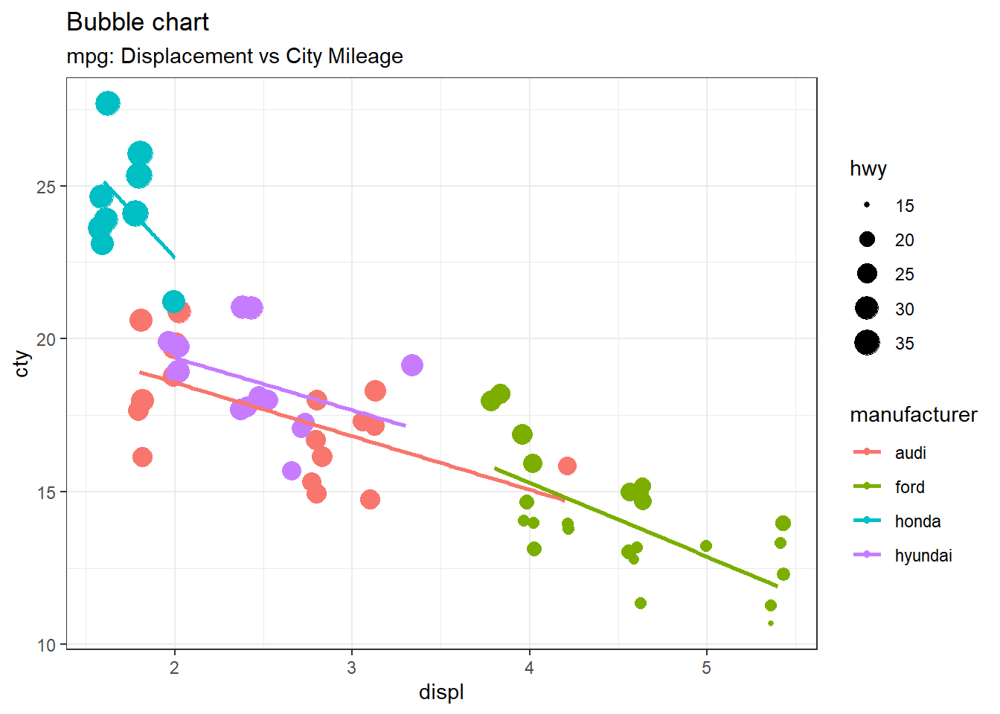

Hello everyone! My name is Gizem Erdogan. I graduated from Middle East Technical University Chemical Engineering department in 2013. I currently work as a customer solutions specialist in the flexible packaging industry. Even though I graduated from the engineering department, my current job is unrelated to engineering or data science. I am very excited to start this master’s degree and with the big data analytics program, my goal is to improve my knowledge in this area, develop new skills, and I plan to have a career change in the future. I believe I can combine my customer knowledge on my current job with CRM analytics.
The session “Quarto for the Curios” was held by Tom Mock who is the Customer Enablement Lead at RStudio. He defines Quarto as the next generation of R markdown. He describes the workflow of Rmarkdown then moves to the workflow of Quarto and mentions about the similarities, differences and advantages that Quarto brings. To use Rmarkdown we need R but to use Quarto are not only limited with R. With Quarto we can prepare the same documents with different programming languages like Python, Julia or Javascript. Tom mentions how to create interactive document by using html widgets, shiny or Jupyter widgets by using them in an quarto document. He closes his conference talk by giving credits to the development team .
4 Posts on R
4.1 Data Frames
A data frame is a table or a two-dimensional array-like structure in which each column contains values of one variable and each row contains one set of values from each column.
Create Data Frame in R
emp.data <-data.frame(emp_id =c (1:5), emp_name =c("Rick","Dan","Michelle","Ryan","Gary"),salary =c(623.3,515.2,611.0,729.0,843.25), start_date =as.Date(c("2012-01-01", "2013-09-23", "2014-11-15", "2014-05-11","2015-03-27")),stringsAsFactors =FALSE)# Print the data frame. print(emp.data)
emp_id emp_name salary start_date
1 1 Rick 623.30 2012-01-01
2 2 Dan 515.20 2013-09-23
3 3 Michelle 611.00 2014-11-15
4 4 Ryan 729.00 2014-05-11
5 5 Gary 843.25 2015-03-27
Data visualization is the technique used to deliver insights for the dataset using visuals such as graphs, charts, maps, and many others.
ggplot2 package which was created by Hadley Wickham is a free, open source, user friendly visualization package in R programming Language . The “gg” in ggplot2 stands for the term Grammar of Graphics. Grammar of graphics framework was introduced by Leland Wilkinson .
You may find more detailed information on Grammar of Graphics in the below link:
The easiest way to get ggplot2 in R is to install the whole tidyverse:
install.packages("tidyverse")
Building Blocks of layers with the grammar of graphics
Data
Aesthetics
Layers
Scales
Coordinates
Facets
Themes
4.2.1Box Plot:
library(ggplot2)theme_set(theme_classic())# Plotg <-ggplot(mpg, aes(class, cty))g +geom_boxplot(varwidth=T, fill="plum") +labs(title="Box plot", subtitle="City Mileage grouped by Class of vehicle",caption="Source: mpg",x="Class of Vehicle",y="City Mileage")
4.2.2Bubble Chart :
# load package and datalibrary(ggplot2)data(mpg, package="ggplot2")# mpg <- read.csv("http://goo.gl/uEeRGu")mpg_select <- mpg[mpg$manufacturer %in%c("audi", "ford", "honda", "hyundai"), ]# Scatterplottheme_set(theme_bw()) # pre-set the bw theme.g <-ggplot(mpg_select, aes(displ, cty)) +labs(subtitle="mpg: Displacement vs City Mileage",title="Bubble chart")g +geom_jitter(aes(col=manufacturer, size=hwy)) +geom_smooth(aes(col=manufacturer), method="lm", se=F)
`geom_smooth()` using formula 'y ~ x'

4.2.3Histogram on a categorical variable :
library(ggplot2)theme_set(theme_classic())# Histogram on a Categorical variableg <-ggplot(mpg, aes(manufacturer))g +geom_bar(aes(fill=class), width =0.5) +theme(axis.text.x =element_text(angle=65, vjust=0.6)) +labs(title="Histogram on Categorical Variable", subtitle="Manufacturer across Vehicle Classes")
4.3 Measure of Central Tendency
There are three main measures of central tendency: Mean, Median and Mode.
Mean: Sum of values divided by number of values. mean() function is used to calculate the mean in R
Syntax for calculating mean in R:
mean(x, trim = 0, na.rm = FALSE, ...)
x: input vector.
trim: used to drop some observations from both end of the sorted vector.
na.rm : used to remove the missing values from the input vector.
2-Median: It is the middle value of the data set. It splits the data into two halves. If the number of elements in the data set is odd then the center element is median and if it is even then the median would be the average of two central elements.
Syntax for calculating median in R:
median(x, na.rm = FALSE)
3-Mode: Mode is the value that has highest number of occurrences in a set of data. Unike mean and median, mode can have both numeric and character data.R does not have a standard in-built function to calculate mode. A function is created below to calculate mode of a data set in R. This function takes the vector as input and gives the mode value as output.
#Create the mode functiongetmode <-function(v) { uniqv <-unique(v) uniqv[which.max(tabulate(match(v, uniqv)))]}# Create the vector with numbers.v <-c(2,1,2,3,1,2,3,4,1,5,5,3,2,3)# Calculate the mode using the user function.result <-getmode(v)print(result)
[1] 2
# Create the vector with characters.charv <-c("o","it","the","it","it")# Calculate the mode using the user function.result <-getmode(charv)print(result)